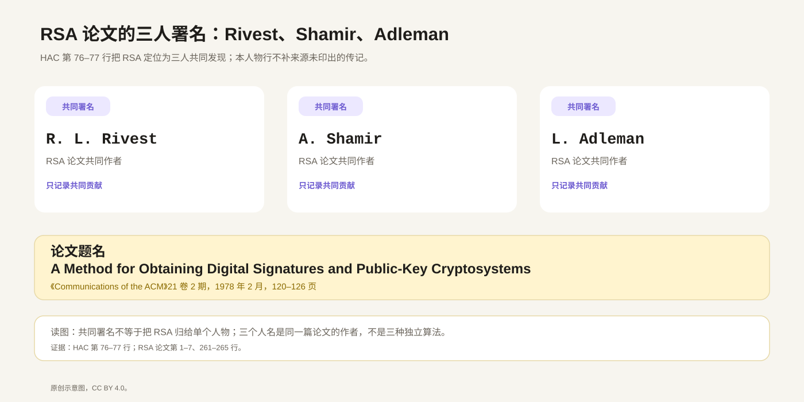
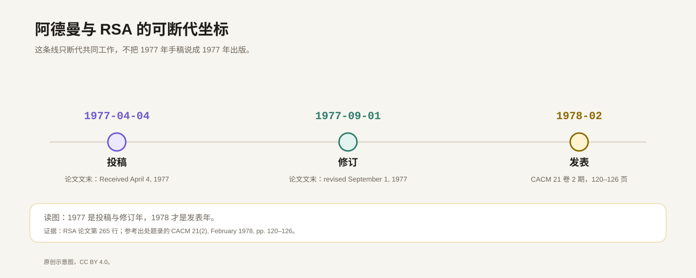

原理与机制
人物：伦纳德·阿德曼（Leonard Adleman）。本行是人物行，其原理对应共同贡献而非个人传记。HAC 第 76–77 行写「In 1978 Rivest, Shamir, and Adleman discovered the first」「practical public-key encryption and signature scheme, now referred to as RSA」，把阿德曼定位为 RSA 的共同发现者之一。因此该条目把 RSA 的共同发明归为 Rivest、Shamir、Adleman 三人，不独归本行；也不补来源未印出的生年、国籍、学历、任职经历或后来奖项。
为什么重要
共同署名的论文把新方法写成「An encryption method is presented with the novel property that publicly revealing an encryption key does not thereby reveal the corresponding decryption key.」，并列出两个后果：一是「Couriers or other secure means are not needed to transmit keys」；二是消息可「be "signed" using a privately held decryption key」，且「Signatures cannot be forged, and a signer cannot later deny the validity of his signature.」。该条目只把这两点记为由三位作者共同署名的论文所提出的性质，不把功劳单独归给阿德曼。

应用与实例
论文把可能用途写在摘要与结论：签名「has obvious applications in "electronic mail" and "electronic funds transfer" systems」；若安全性足够，方案「permits secure communications to be established without the use of couriers to carry keys」，并允许「"sign" digitized documents」。该条目只记录论文提出的用途，不称 1977/1978 已部署，也不把示例当成产品。
边界与攻击面
论文自陈安全边界：系统安全「rests in part on the difficulty of factoring the published divisor, n」，并请读者「find a way to "break" the system」；在「withstood all attacks for a sufficient length of time」之前，作者只把方案当作有待检验的候选。该条目只记录论文的安全假设与作者自述，不把分解困难写成已证明下界，也不称 RSA 在 1977 年已被证明安全。
历史与背景
可断代坐标由论文文末印出：「Received April 4, 1977; revised September 1, 1977」。参考出处题录把这篇论文记为《Communications of the ACM》21 卷 2 期、1978 年 2 月、120–126 页。因此该条目把阿德曼参与的共同工作断到 1977 年 4 月 4 日投稿、9 月 1 日修订、1978 年 2 月发表；不把 1977 年手稿当作 1977 年公开出版，也不据共同署名补写个人传记。

逐步示例与核验
角色关系模型
只登记四类关系：教育/任职机构、公开文本或专利、参与的标准/机器/事件、可核同行评价。每条关系都要有来源；没有来源的师承、奖项和私生活不进入模型。
参考出处
- Wikipedia search entry for 伦纳德·阿德曼. https://zh.wikipedia.org/w/index.php?search=%E4%BC%A6%E7%BA%B3%E5%BE%B7%C2%B7%E9%98%BF%E5%BE%B7%E6%9B%BC
- MacTutor History of Mathematics Archive, University of St Andrews. https://mathshistory.st-andrews.ac.uk/
- MacTutor biography: Leonard Adleman. https://mathshistory.st-andrews.ac.uk/Biographies/Adleman/